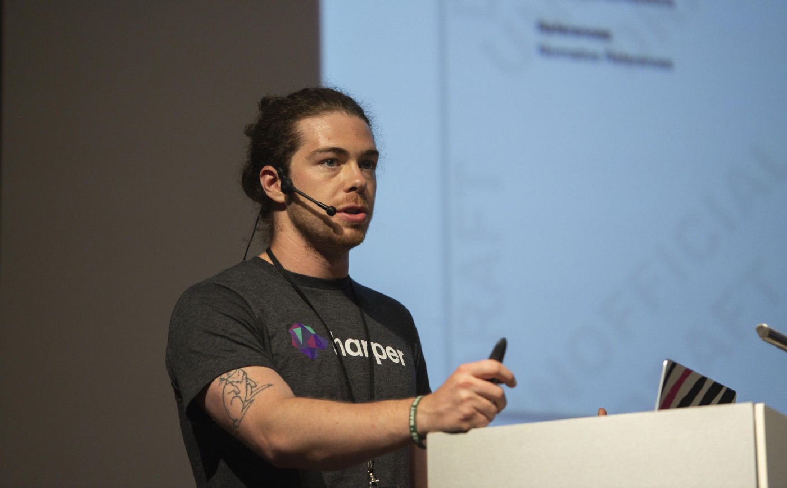
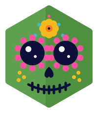

JSConf México 2026 · Guadalajara

Code and Learn
Presented by

Ethan Arrowood
Head of Open Source Engineering at Harper
- @Ethan-Arrowood
- linkedin.com/in/ethan-arrowood
- bsky.app/profile/arrowood.dev
- ethan@arrowood.dev

Plan
Quick overview, then diving in head first.
- Understand Node.js What it is and why the project is shaped this way
- Contributing Community and contribution details
- Work safely Contribution workflow, prerequisites, AI policy
- Start coding Claim a task, get to work!
What is Node.js?
Run JavaScript everywhere.
A free, open source, cross-platform JavaScript runtime for servers, web apps, command line tools, and scripts.
// server.mjs
import { createServer } from 'node:http';
const server = createServer((req, res) => {
res.writeHead(200, { 'Content-Type': 'text/plain' });
res.end('Hello World!\n');
});
server.listen(3000, '127.0.0.1', () => {
console.log('Listening on 127.0.0.1:3000');
});node server.mjs.A lot of surface area
66 sections of API docs. Every one has code, tests, and docs you can improve.
- Assertion testing
- Asynchronous context tracking
- Async hooks
- Benchmark runner
- Buffer
- C++ addons
- C/C++ addons with Node-API
- C++ embedder API
- Child processes
- Cluster
- Command-line options
- Console
- Crypto
- Debugger
- Deprecated APIs
- Diagnostics Channel
- DNS
- Domain
- Environment Variables
- Errors
- Events
- File system
- FFI
- Globals
- HTTP
- HTTP/2
- HTTPS
- Inspector
- Internationalization
- Iterable Streams API
- CommonJS modules
- ECMAScript modules
- node:module API
- Packages
- TypeScript
- Net
- OS
- Path
- Performance hooks
- Permissions
- Process
- Punycode
- Query strings
- Readline
- REPL
- Report
- Single executable applications
- SQLite
- Stream
- String decoder
- Test runner
- Timers
- TLS/SSL
- Trace events
- TTY
- UDP/datagram
- URL
- Utilities
- V8
- Virtual File System
- VM
- WASI
- Web Crypto API
- Web Streams API
- Worker threads
- Zlib
From the Node.js v26.12.1 documentation index, nodejs.org/api
Contributing to Node.js
No contribution is too small and all contributions are valued.
- Code, docs, answers, infrastructure, and advocacy all count.
- Not a Collaborator yet? Keep at most 10 pull requests open.
What the guide covers
- Code of Conduct
- Issues
- Pull Requests
- Automation and bots
- AI Use Policy and Guidelines
- Developer's Certificate of Origin 1.1
AI use in Node.js
github.com/nodejs/node/blob/main/doc/contributing/ai-guidelines.md
Decision making should always be based on human judgement instead of machine automation, regardless of whether the automation is powered by AI.
Okay
- Read and understand the project
- Treat AI output as a hypothesis, then verify it
- Disclose AI use and how you checked it
- Grammar checks and translation
Not okay
- Pull requests opened by automated tooling
- AI fixes for "good first issue" issues
- Automated replies to review feedback
- Pasting messages generated entirely by AI
AI policy overview
Use AI to learn faster. Do not use it to bypass human accountability.
Appropriate
- Explain unfamiliar code
- Draft a test plan
- Check wording
- Suggest debugging paths
Inappropriate
- Unattended bots
- PRs you cannot explain
- Fake repro steps
- Large opaque rewrites
Human in the loop. Human signs off. Human responsible.
How to sustainably source ideas
Good contributors learn where problems come from, not just where labels appear.
- Good first issues Start with curated entry points, like we are doing today.
- Recent PRs Learn from recently accepted work.
- Docs confusion Fix where your own understanding got stuck.
- Test gaps Protect behavior that already exists.
- Issue triage Reproduce, reduce, clarify, label.
Make the smallest useful change that you can explain.
Prerequisite recap
You are ready when you can build Node.js and run one test.
- A GitHub account with two-factor authentication
- Git configured with the same email as your GitHub account
- Fork
nodejs/node, clone it, and addupstream - The Node.js dev container (recommended) or a local build
tools/test.py test/parallel/test-assert.jspasses
gist.github.com/Ethan-Arrowood/b75daccca7af5889ea70eab586292a78
Let's start coding
¡A programar!
- Wi-Fi
- TBD
- Password
- TBD
nodejs.org/code-and-learn-2026
Please don't use AI for today's contribution. Learn the manual process first.
Before you open the PR
Make the reviewer's job easier. That is part of being helpful.
- Clear title
- Tests or docs updated
- Small scope
- Signed-off commit
- Why this matters
- Respectful follow-up
Reviewer question to answer: What changed, why does it matter, and how did you check it?

¡Gracias!
Thank you